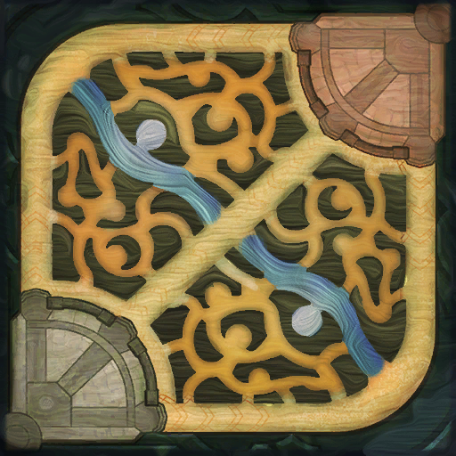

Team Bio
Team SoloMid (TSM) is a North American eSports Team, created around the community website SoloMid.Net by brothers Andy "Reginald" Dinh and Dan "Dan Dinh" Dinh in September 2009. The team was first seen in early 2011 after being formed to participate in the Riot Season 1 Championship later that year. The organization has also previously hosted the now-disbanded Team SoloMid Evo.